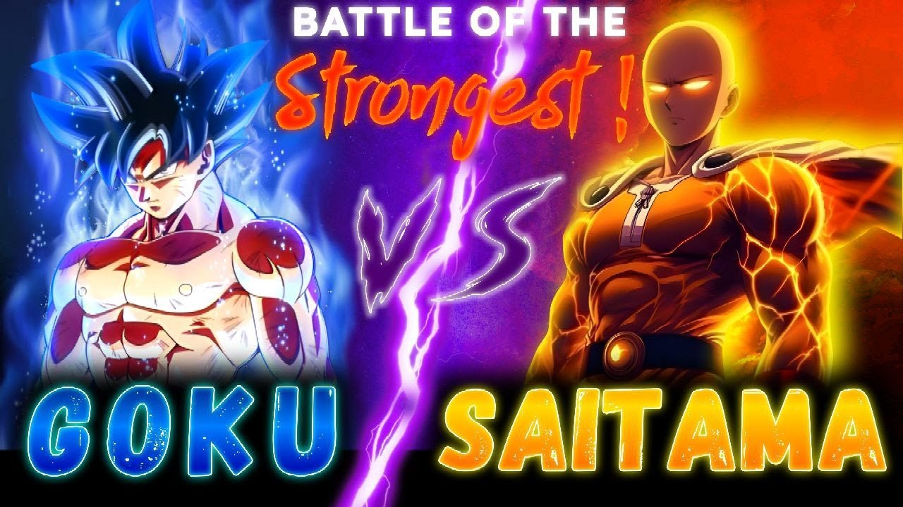

Last Alive

.png)
Is Solo Leveling really worth the hype or just another overhyped anime? In this video, we dive deep into what makes Solo Leveling so popular worldwide and address the real question ‚Äî is it truly mid, or is it just the beginning of something legendary? üåçüî• From the rise of E-rank hunter Sung Jin-Woo to becoming the Shadow Monarch, this isn‚Äôt just a story ‚Äî it‚Äôs the origin of a legend. But that‚Äôs not all. I‚Äôve got a message for all of you ‚Äî my subscribers, my shadow army. I have massive plans coming like Saitama vs Sung Jin-Woo at 600 subs, Goku vs Jin-Woo Final Battle, and Top 20 Subscriber Ranking, where you can become one of my Shadow Commanders!
Kya hoga agar Goku aur Sung Jin-Woo ek ultimate battle mein takrayen? ü§Ø Agar magical powers use na ho toh Goku easily jeet sakta hai, lekin jaise hi Sung Jin-Woo apni Shadow Monarch powers unleash karega, battle ka outcome sirf Goku ki resistance par depend karega! üòàüí•
In this video, we pit two of the most powerful characters from anime and manhwa against each other: Goku from "Dragon Ball" and Sung Jin-Woo from "Solo Leveling." We'll dive into their backgrounds, abilities, and see who might come out on top in a hypothetical battle. Who do you think would win? Let us know in the comments!
Yeh battle kaafi epic hone waala hai! Aaj ke video mein hum breakdown karenge Goku aur Superman ke powers, strength, aur feats ko across their different versions. Kya Man of Steel Superman Goku ke Ultra Instinct ka saamna kar paayega? Aur Comic book Superman? We're diving deep into their speed, strength, aur abilities ka comparison, aur saath mein kuch DC aur anime characters ko bhi le aayenge to make it even more interesting! Goku ki limits kya hai? Aur Superman ka comic version kitna OP hai? In sab ka answer iss video meinmilega. Don't forget to comment and tell us, agla battle kaun sa hona chahiye? Superman vs Saitama,ya phir Goku vs Flash? Chalo, iss journey ko shuru karte hain with Last Alive! Facts, feats, aur epic moments guaranteed!
Igris vs. Beru – The ultimate battle between Sung Jin-Woo’s strongest shadows! Who is the true warrior of the Shadow Monarch? Igris, the silent and noble knight, or Beru, the terrifying yet loyal ant king? Both have served Jin-Woo with unwavering dedication, but if they were to clash, who would stand victorious? In this video, we dive deep into their abilities, personalities, and history to determine the strongest shadow soldier. Stay tuned for an epic breakdown of this legendary battle—only on Last Alive!
Aaj hum baat karenge Gojo vs Sukuna ke baare mein – Jujutsu Kaisen ka sabse epic battle. Manga ke latest chapters mein hume Gojo ki shocking defeat dekhne ko mili, lekin kya story sach mein waisi hai jaise dikhayi gayi? Is video mein, main apna perspective share karunga ki battle actually kaise end honi chahiye thi, kyun mujhe lagta hai ki Gojo ko jeetna chahiye tha, aur kaise Sukuna ka downfall possible tha.
In this video, we present the epic and intense showdown between two of the most powerful characters in anime history: Satoru Gojo from Jujutsu Kaisen and Boruto Uzumaki from Boruto: Naruto Next Generations. This battle will determine who truly holds the ultimate power!
In this epic battle between two of the most powerful characters from their respective universes, we dive deep into the showdown between Sung Jin Woo from *Solo Leveling* and Wang Ling from *The Daily Life of the Immortal King*. Both characters possess incredible abilities and power levels, but who will come out on top? Watch the video to find out as we analyze their strengths, weaknesses, and the decisive factors that could determine the victor.
In this exciting video, we dive deep into the epic showdown between two of the most powerful characters in anime history: Goku from Dragon Ball and Saitama from One Punch Man. We're not just pitting them against each other in a typical battle; we're using actual calculations to compare their iconic moves – Goku's Kamehameha and Saitama's sneeze.
üí¨ Top Comments